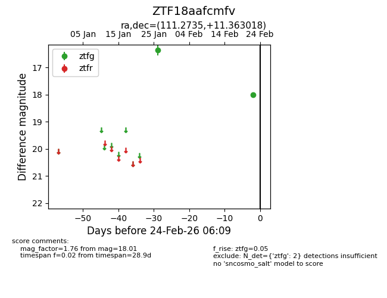
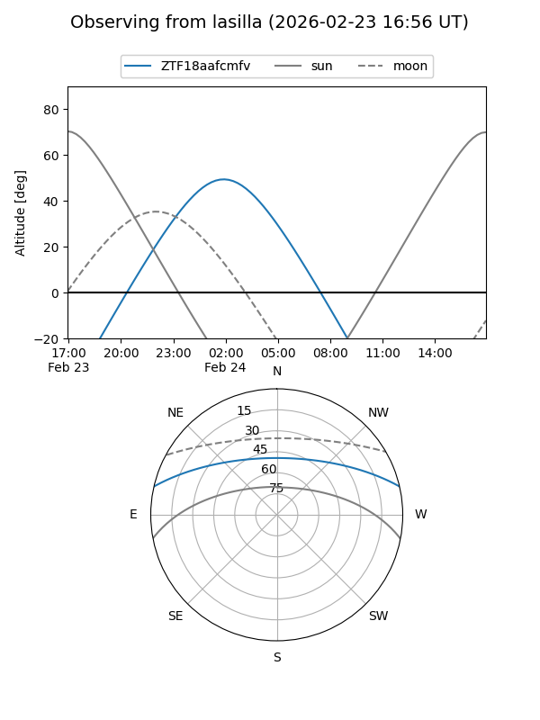
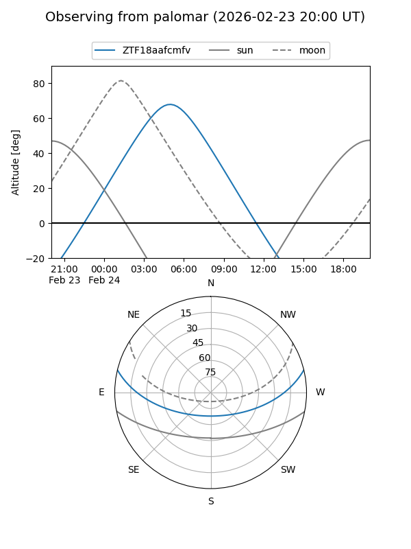

ZTF18aafcmfv
Target ZTF18aafcmfv at 2026-02-24 09:08
Aliases and brokers:
FINK: link
Lasair: link
ALeRCE: link
alt names
ZTF18aafcmfv (ztf,fink_ztf)
Coordinates:
equatorial (ra, dec) = 111.2735,+11.36302
equatorial (HMS+DMS) = 07:25:05.65,+11:21:46.86
galactic (l, b) = (206.4649,+12.56314)
Flags:
Photometry:
last ztfg=18.01
2 ztfg detections
Lightcurve

Visibility


Additional plots